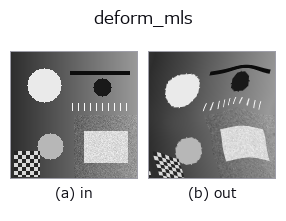

deformation op• Data kinds: image → image
• Call: fullseye.apply(img, "deform_mls", a=0.5, b=0.5) (the 2-D model is one image plus two scalar knobs a,b∈[0,1])

*The figure is the actual output on a synthetic 128×128 input. Left: input, right: output. Point clouds are drawn as a top-down scatter (brightness = z), 1-D series as a line plot, volumes as the maximum-intensity projection along z, videos as the middle frame, complex images as magnitude; return values that are not pictures are shown as the values themselves.*
Sweeping knob a (0.1 / 0.5 / 0.9, the other knob at its default):
▸ deform_mls: knob a sweep (docs site)
Sweeping knob b (0.1 / 0.5 / 0.9, the other knob at its default):
▸ deform_mls: knob b sweep (docs site)
On other images (synthetic scene / photo / coins. Top row: inputs, bottom row: their outputs. Knobs at default):
▸ deform_mls: other inputs (docs site)
*The 4th column is a colour (H,W,3) input. This op handles colour without crossing channels (it does not convolve the colour channel as a third spatial axis).*
Moving-least-squares image deformation, affine variant (Schaefer 2006).
A 5x5 grid of control points `p_i` is displaced to
`q_i = p_i + amp*[sin(2 pi gx), cos(2 pi gy)]` (gy, gx = normalised
control coordinates). For every destination pixel the weighted
least-squares affine map is re-solved with the weights
`w_i = 1/|p_i - v|^(2 alpha)`, so the warp is a *different* affine at every
pixel -- smooth, interpolating at the control points, and exact on affine
data. The backward map is obtained by solving the same MLS problem with the
roles of `p and q` swapped (the resampling formulation of the paper's
section 4), which is the exact inverse whenever the control data is affine
and a smooth approximation of it otherwise. `a` sets the amplitude
`amp = 0.12*a*min(H,W), b the falloff alpha = 0.5 + 1.5b` (large
alpha = tightly local deformation). `a = 0 gives q = p`, hence the
identity (up to sub-pixel resampling error).
• gallery2d_geometry family guide
• Sample-data catalog (download URLs / licences) — 2-D uses skimage.data (BSD/public domain) plus synthetic images; 3-D lists download URLs for real data sources (Stanford, PDS, …).
• Operator provenance and references — the sources of the research/methods this op family came from.
• The canonical algorithm (author, year) and its uses are named in the family usage guide above.
The program below has been verified to run (same input as the figure). In Studio's help this block becomes buttons that load and run it on the spot.
deform_mls 0.50 0.50
▸ Load this pipeline · Load & run
• gallery2d_geometry — py -3.11 examples/gallery2d_geometry.py
image as input)identity · gaussian · mean_box · bilateral · unsharp · median · min_filter · max_filter
deformation)*Provenance: ops.py — 2D operator registry. This per-op note is generated by tools/opdocs.py md (do not hand-edit).*
© 2026 Kazufumi Furuse — Fullseye operator documentation. Licensed under Apache-2.0.
{kind=link}
{kind=link}
{kind=link}